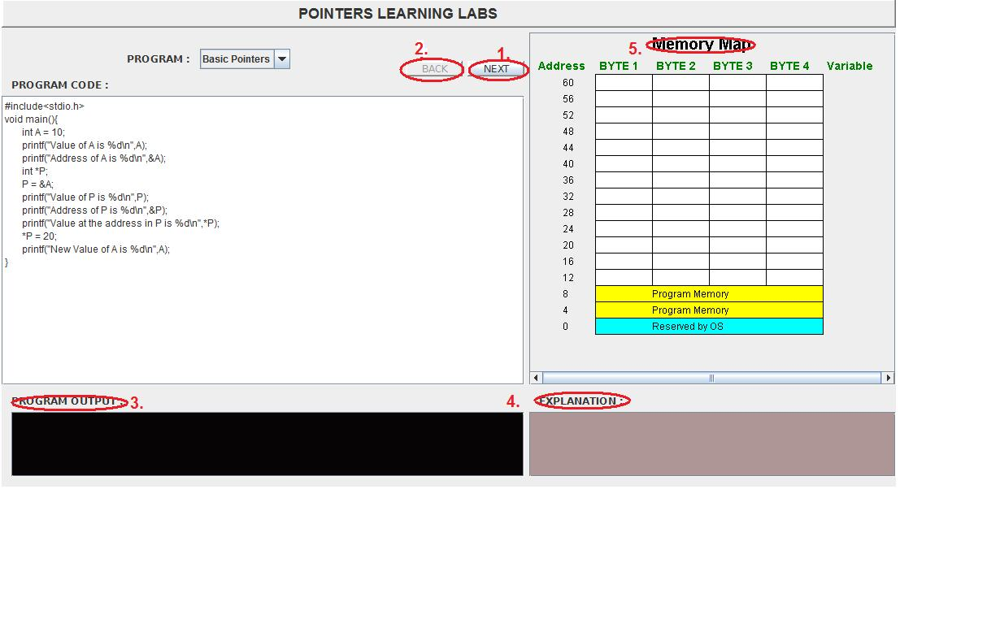
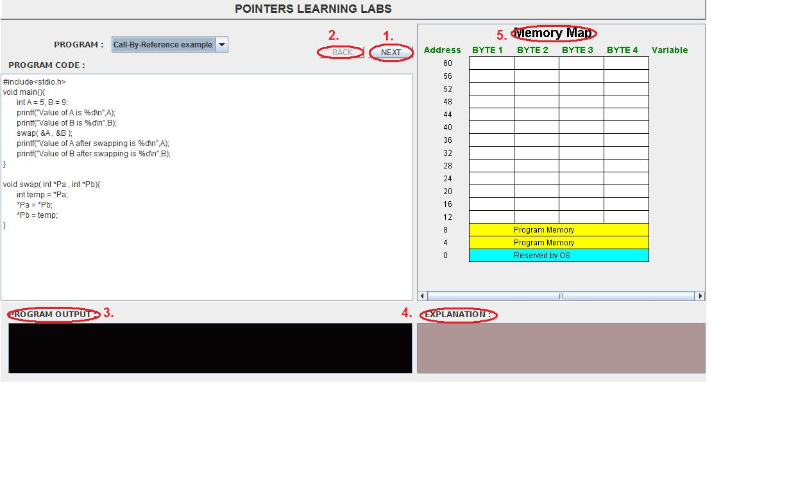

Every time a variable is declared, some bytes are allocated to that variable depending on its datatype. For example, int takes 4 bytes, a char takes only one byte. Arrays allow allocation of even larger number of storage space or "bytes". Each of these bytes has a distinct address in the main memory. Pointer is a datatype which can store this address. Hence a pointer can serve as a "reference" to the data contained other variables. This has some useful applications, most importantly, allowing users to modify data from within a function without needing to make a copy of the data, and also allowing the user to make "linked" data structures.

A pointer is a programming language data type which can store memory addresses of other variables. A pointer variable corresponding to any data type can be declared by using * before the name of the pointer.
int *pointer1_1,*pointer2_i, var_i=5;
This would declare 2 integer pointers meant to store references(memory address) to variables of integer data type. Note that var_i is just a normal integer variable. Alternatively, pointers can also be declared as:
int* pointer1_1,pointer2_i; int var_i=5;
The & operator can be used with any variable to get its memory address. So, writing
pointer1_i=&var_i;
would assign the memory address of var_i to pointer1_i.
 Figure explaining the working of the statement: a=&b; |
The * operator is used to access the values stored at a given address. So, writing
printf("%d\n",*pointer1_i);
would print 5 on the console. This process of accessing the value stored at a given position is known as dereferencing a pointer. Similarly, to store references to character or float variables one can define char or float type pointers.
A pointer can be used to allocate memory in the runtime using the malloc() function, defined in stdlib.h, by doing dynamic memory allocation. Writing
int *ptr=(int *)malloc(20*(sizeof(int));
will allocate a space 20 integer variables and store the address of the first byte in ptr. An array, infact, is just a constant pointer to which allocation is done automatically. Hence, writing
int arr[100];
is equivalent to writing
const int* arr=(int *)malloc(100*sizeof(int));
So, writing *arr will give the value stored at arr[0].
Arithmatical operations like addition and subtraction can be performed to a pointer. The nature of these arithmatic operations is what distinguishes an integer pointer from, say, a character pointer, which otherwise just store memory addresses for another variable. Adding one to an interger pointer makes to point to the next integer, and hence, it skips 4 bytes. Adding one to a character pointer makes it to point to the next character, and hence, it skips only 1 byte. Hence, for the array arr, writing arr[3] is equivalent to writing *(arr+3). Both refer to the value stored in the 4th cell of the array.

- To understand the concept of memory adddress associated with every variable.
- To understand pointer referencing and dereferencing.
- To understand how pointers are useful in dynamic allocation of memory.


In this lab you will learn the basic concepts of pointers and addresses. You will also understand the process of memory allocation and passing in reference.


- Press start to start the experiment.
- Press next to see the execution of the code
- Relavant line in the code is shown here
- The output of the code is shown in the right

Call By Reference
- Press start to start the experiment.
- Press next to see the execution of the code
- The output of the code is shown in the right
- You can stop the code using stop button
